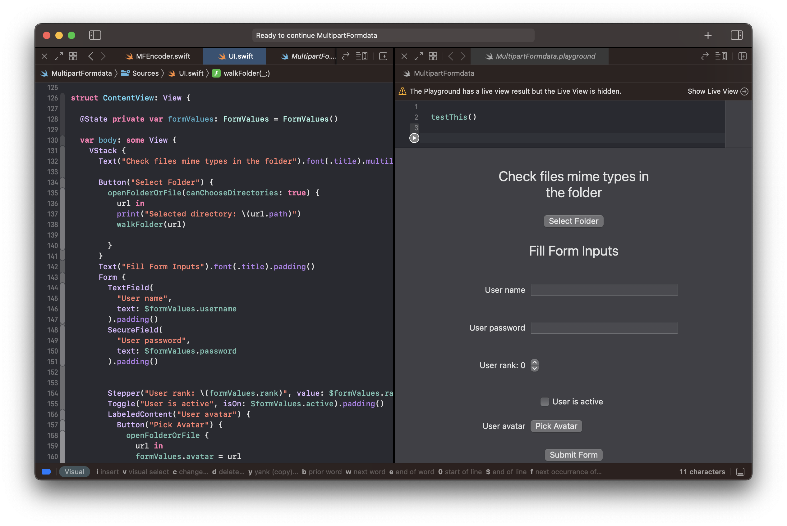

Introduction
Brief Summary
In this set of articles, we take a close look at Swift programming. We’re focusing on creating a package called “MFEncoder” to handle multipart form data. This is important for things like sending forms and files over the internet. We will use the OpenAI GPT-4 chatbot as a guide or mentor to help us through the project.
What We’re Doing
Swift is a popular language for making software, especially for Apple’s devices like iPhones and Macs. Multipart forms help us to send more complex data from a client to a server. Right now, there’s a gap in available tools that make working with multipart forms in Swift easy and efficient. Our package, “MFEncoder,” aims to fill that gap.
The final result can be found here
Goals
- To understand the real-world challenges and basic ideas behind using Swift for data encoding.
- To build “MFEncoder,” a tool for making multipart form data handling easier in Swift.
- To explore how OpenAI’s GPT-4 can act as a virtual mentor to help us complete this project.
How We’ll Do It
We’ll cover these topics in the series:
- Starting Points: We’ll talk about the basics of data encoding and multipart forms.
- Deep Dive into MFEncoder: We’ll explain how the package works and what features it offers.
- Learning from a Virtual Mentor: How OpenAI’s chatbot has guided us in this project.
- Testing and Performance: We’ll discuss how we know the package works well.
- Wrap-Up and Next Steps: We’ll summarize what we’ve done and talk about what could come next.
Why This Matters
This set of articles is both a learning resource and a practical guide. It’s designed to help anyone interested in Swift programming by providing both basic knowledge and practical examples. Plus, the package we’re making will meet a real need for those looking to work with multipart forms in Swift.
Part One
What is a multipart form?
Multipart form data is typically used when sending forms that have more complex data, such as files. It’s called “multipart” because the different parts of the form are sent as different parts in the body of the HTTP request, with each part having its own content type and other headers.
In order to construct a multipart/form-data payload, we need to:
Set the HTTP header
Content-Typetomultipart/form-data; boundary=someArbitraryString, wheresomeArbitraryStringis a string that doesn’t occur in the data.Encode the data for each part with the following format:
--someArbitraryString Content-Disposition: form-data; name="fieldName"; filename="filename.jpg" Content-Type: image/jpeg ...data...The
--someArbitraryStringline denotes the start of a part. TheContent-Dispositionheader specifies the name of the form field and, if applicable, the filename. TheContent-Typeheader specifies the MIME type of the data. After the headers, an empty line is required, and then the data for the part can follow. We need to make sure the boundary doesn’t appear in our data, and to use for line breaks, as required by the HTTP specification.After all parts, add a final boundary with an extra
--at the end:--someArbitraryString--
MIME and Content-Disposition: A Brief History
MIME (Multipurpose Internet Mail Extensions) and Content-Disposition are quite ancient in the context of internet technologies, dating back to the early days of the World Wide Web and even earlier to email systems.
MIME was initially created to extend the format of email messages to support text in character sets other than ASCII, as well as attachments of audio, video, images, and application programs. Before MIME, email was largely constrained to the English language and could not easily handle multimedia attachments. MIME solved this by specifying how different types of content could be encoded for transport.
Content-Disposition: A Child of MIME
The Content-Disposition header originated as a way to specify the disposition of MIME-encoded message parts. It was used to specify whether a certain piece of content should be displayed inline within the email client or treated as an attachment. It also allowed for the naming of attached files.
How Did We Get Here?
Over time, the HTTP protocol borrowed many ideas from MIME due to the similarity in their requirements. HTTP often deals with the transportation of various types of content just like email, and therefore many MIME headers, including Content-Type and Content-Disposition, became useful in HTTP as well.
Why Similar?
Extensible: Both HTTP and email needed a way to handle an arbitrary number of types of content, so the extensible nature of MIME was a good fit.
Self-Describing: MIME makes each message part self-describing. This is crucial in both email and HTTP where a message may go through several intermediaries, and each needs to be able to understand the content to some extent.
Multi-Part Messages: Both email and HTTP forms had to solve the problem of “multipart” messages (i.e., messages containing multiple pieces of data in potentially different formats). MIME offered a standardized solution for this with
multipart/*types.Character Sets: With the globalization of the internet, the need for handling multiple character sets became evident. MIME had already solved this problem for email, so it made sense to reuse the same solution for HTTP.
Binary Data: Both email and HTTP had the need to transmit binary data. MIME provides a mechanism to encode this kind of data for transport.
So, while MIME and Content-Disposition may seem dated, they provide a tried-and-true standard for handling a wide variety of content types across different internet technologies. And because they were designed to be extensible, they have been able to evolve and remain relevant even as the internet has grown and changed.
How to produce it with Swift
GPT-4 suggests the following example which we will be using as a starting point:
var request = URLRequest(url: URL(string: "https://example.com")!)
request.httpMethod = "POST"
let boundary = "Boundary-\(UUID().uuidString)"
request.setValue("multipart/form-data; boundary=\(boundary)", forHTTPHeaderField: "Content-Type")
var body = Data()
let fieldName = "myField"
let fieldValue = "myValue"
body.append("--\(boundary)\r\n".data(using: .utf8)!)
body.append("Content-Disposition: form-data; name=\"\(fieldName)\"\r\n\r\n".data(using: .utf8)!)
body.append("\(fieldValue)\r\n".data(using: .utf8)!)
let fileUrl = URL(fileURLWithPath: "/path/to/your/file.jpg")
let fileData = try! Data(contentsOf: fileUrl)
let fileName = fileUrl.lastPathComponent
body.append("--\(boundary)\r\n".data(using: .utf8)!)
body.append("Content-Disposition: form-data; name=\"file\"; filename=\"\(fileName)\"\r\n".data(using: .utf8)!)
body.append("Content-Type: image/jpeg\r\n\r\n".data(using: .utf8)!)
body.append(fileData)
body.append("\r\n".data(using: .utf8)!)
body.append("--\(boundary)--\r\n".data(using: .utf8)!)
request.httpBody = body
let task = URLSession.shared.dataTask(with: request)
task.resume()This example teaches us several important points:
- To convert our form into request body we us Data object in Swift
- We convert each form field name and value to smaller Data chunks and append them to our body
- We can encode any string values using utf8
- We can use file URLs as primary media for passing any files like images, documents etc
- We use same Data object to read the contents of file, passing its URL as parameter
- With each field name we add boundary and Content-Disposition row
- For files its also important to add filename and MIME type
Last point poses the next problem.
How to detect MIME type of an arbitrary file in Swift?
Solution that GPT-4 suggested here was marked as using some deprecated tech by Apple
import MobileCoreServices
func mimeType(forPath path: String) -> String {
let url = URL(fileURLWithPath: path)
let pathExtension = url.pathExtension
if let uti = UTTypeCreatePreferredIdentifierForTag(kUTTagClassFilenameExtension, pathExtension! as CFString, nil)?.takeRetainedValue() {
if let mimetype = UTTypeCopyPreferredTagWithClass(uti, kUTTagClassMIMEType)?.takeRetainedValue() {
return mimetype as String
}
}
return "application/octet-stream"
}As an alternative GPT-4 suggested using hardcoded mappings or wrapping low level C libraries like libmagic. Luckily we were able to find a replacement for deprecated CarbonCore tools - UTType, which can be obtained via URL.resourceValues method as follows:
func getMimeTypeFromURL(_ fileURL: URL) -> String? {
var fileURL = fileURL
fileURL.resolveSymlinksInPath()
do {
let fileObjectResource = try fileURL.resourceValues(forKeys: [.isDirectoryKey])
if fileObjectResource.isDirectory ?? false {
return nil
}
if #available(macOS 11.0, iOS 14.0, *) {
let resourceValues = try fileURL.resourceValues(forKeys: [.contentTypeKey, .isDirectoryKey])
if let type = resourceValues.contentType, let mime = type.preferredMIMEType {
return mime
}
}
return "application/octet-stream"
} catch {
return nil
}
}UTType api is only supported since iOS 14.0 so we fallback to generic application/octet-stream for any previous versions. Providing accurate MIME type is not necessary for properly uploading files, but it can be crucial in some cases (like if backend applies some compression over the uploaded media). We added resolveSymlinksInPath method after we encountered a bug with bundled resource. At least in some cases bundled resources were symlinks and we were getting application/octet-stream type for them unless those symlinks were resolved.
Using interactive Playground to test-drive our MIME detection and form serialization
We wanted to make sure our getMimeTypeFromURL function works with real life files. We also wanted to play around with an idea of embedding interactive UI into Swift Playground. We decided to create a basic View in SwiftUI that would allow us to do 2 things:
- Pick a random directory from our hard drive and run its contents by
getMimeTypeFromURLto see how it handles different files - Provide a UI for filling basic form that we will be encoding and sending to the sample API in order to verify the serialization works. We picked FastAPI and its underlying Starlette http server as a source of truth to see if our
multipart/form-datacan be recognized and parsed.
Adding SwiftUI view to a Playground is as simple as
// 1. Import the SwiftUI
import SwiftUI
// 2. Import the Playground Support
import PlaygroundSupport
// 3. Build the View
struct ContentView: View {
@State private var formValues: FormValues = FormValues()
var body: some View {
// TODO: add our controls here
}
}
// 4. Attach it to the Playground
PlaygroundPage.current.setLiveView(ContentView())After that we run our Playground and voila

Opening the standard file selection dialog inside our View was actually a little bit more challenging. GPT-4 was suggesting some convoluted ways with NSViewRepresentable as proxy between AppKit NSOpenPanel and our SwiftUI view. After some trials and errors we came up with much simpler way:
// we simply initialize NSOpenPanel and open in as modal, than call our callback when its over
func openFolderOrFile(canChooseDirectories: Bool = false, _ action: (_ url: URL) -> Void) {
let openPanel = NSOpenPanel()
openPanel.title = "Choose a directory"
openPanel.showsResizeIndicator = true
openPanel.showsHiddenFiles = false
openPanel.canChooseDirectories = canChooseDirectories
openPanel.canCreateDirectories = false
openPanel.allowsMultipleSelection = false
openPanel.directoryURL = URL(fileURLWithPath: NSHomeDirectory())
if openPanel.runModal() == NSApplication.ModalResponse.OK {
if let url = openPanel.url {
action(url)
}
}
}
// ... deep in our View we use it like this...
Button("Select Folder") {
openFolderOrFile(canChooseDirectories: true) {
url in
print("Selected directory: \(url.path)")
walkFolder(url)
}
}We use FileManager to read the contents of a directory and iterate files inside. This works quite well, except in some cases the Playground gets frozen. Seems like it mostly happens when XCode is in full screen mode.
Having all the necessary tools we were ready to start implementing MFFormData - A low-level API, inspired by the Web’s FormData API, that gives complete control over the form data before submitting it over HTTP.
We will tell about it in our next part of this series.